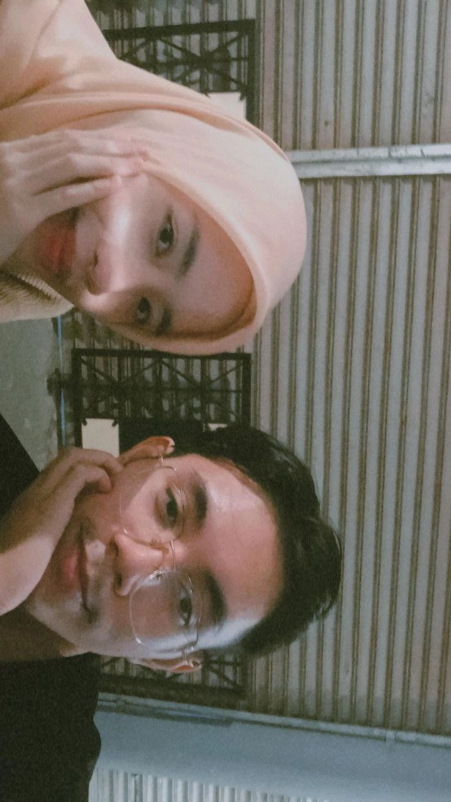

🎉 Happy 21st Birthday, Shuputeriku sayang! 🎂
Wishing you a day filled with love, laughter, and endless joy!
Hihihihi lamak dah kita bersama sik berasaa dah 3 tahun tuk nyambut birthday sama, lain tahun lain gik cara sambut birthday hshshs
Wish kalituk abang rasaa sedih juakk, sama jak macam tahun tahun lepasss rasa sedih ngan happy dalam masa yang samaa sebab masih bertahan relationship ngan yayang.
Banyakkk manis pahitnyaa yang kita dah lalui sama-sama hmmm, kadang di atas sama sama kadang di debah sama sama kita duak. Kadang menolong sama sama, kadang kelaie sama sama.
Tapi masih juak kita kuat nak tempuh semuaa masalah yaaa


First of all, happy birthday yayanggg hihihi >.<
Selamat ulang tahun yang ke-21 sayanggg, makinnn berusia yaaa banyak banyaklaaa jaga diriii, benarpun makin berusia perempuan dah sik menumbuh gik, abang cadangkan stop gik
berharap nak tinggi HAHAHHAHAH sekdalah hshshsh terus kuatkan semangatt harapan yayangg semua yaa jangannn mudah gilak give up. Sik senangg yayangg sejaoh tukk sik susah juakk
yayangg bolehh jatuh balitt ntam apapaa hal yang mengganggu tapii sik bermaksud gangguan yaa sik bermakna, boleh jadii sebagaii tujuan hidup atau panduan atau hint untuk pergi
ke sini gik hidup yaaa, apapaaa pun abangg tetapp disebelahh dibelakangg didepann yayangg demi support backup jagaa yayanggg, jadii seperti biasaa jangan maluu maluu nak mintak
tolong dari abangg, kitaa bukan dua tiga hari baruk kenal yeeee, teruskan olah siktauk maluu ngan abangg, teruskann mengaduu teruskann berharapp teruskann bergantung ngan abang
sebab abangg bukann orang yang ngungkit, banyak niii punn abang berik ngan yayangg dari segi kasih sayangg, attention, keperluann abangg sik kira, abangg kira semua ya sebagaii
tanggungjawab abangg effort abangg sebagai bakal suami yayanggg, abang mok buktikan yangg yayangg sik salah pilih pasangan, ada masanya mungkin abang polah salahhh and abang
mintak maaf pasal yaa sebab abangg sik sengajaa juakk polahh salahh
Secondly
JANGAN pernah give up antara kitaaa, abangg mok teruskan hidup tapi mesti ada yayang, mun sekda yayang sik bermakna hidup abangg rasa kosongg :( jadiii jangann tinggalkan
abang sik kira dalam apaaa sekali pun hal jaaaaangannnn yeee, abangg dahh sayanggkann gilak ngan yayangg dahh sukaa gilakk dahh cintaa gilakk, mun yayangg hilang atau pergi
sekda sapaa bolehh gantii yayangg, sik akann wujudd gikk Manira Shuputeri sik kiraa sapaaa, nyaaa mesti naktukk juakk, abangg sudii support apaa maok dipolahh yayanggg
yayangg pun samaa juakk sudi support apaa maok dipolahh abanggg, kitaa samaa samaa senanggg sama samaa susahhh dipadah yayanggg, macamnii gikk abangg sik sayangkann yayangg
yayangg yaa terlaluu baitt ngan abangg nii sikk abangg terjatuh hatii ngan ciptaan Allah yangg hebatt tukk, mokk macamni sekali punn abangg tetapp pilihh yayanggg, ada orang
salahkan yayangg?? abangg tetapp menyebelahi yayanggg, tetapp sokongg ngann cayakk yayangg bukann macamm yangg orang taukk, abangg jakk taukk benaa pinii olahnyaa walaupun
belumm habiss abangg kuasaiii belum habiss abangg pahammm apaa keinginan yayangg padaa masaaa tertentuu, masihh juakk abangg polahh salahh time layannn yayangggg, part yaa
abangg mintak maaff bukan niat abanggg, abangg sik sengajaa yaaa, semuaanyaa usaha abangg masihh nakk memperbaiki dirik demi yayangg demi kitaa, bakk kataa orang orang lain
dengarr kataa binii mun mokk terus bahagia/tenangg dalam rumah tangga/relationship jadii abangg mintakk maaff sebabb belomm dapatt jadii macamni yangg yayangg maok belom dapatt
jadi yangg yayangg perlukan, teruskan berik abang peluangg jangann mengalahh ngann abangg macamni abangg sabarr ngan yayangg macamnii yayangg turunkann ego abangg untuk abang
kekal ngan yayanggg macamnii yayang ajar abang jadii lakii yang sempurna untuk yayangg, thankkk youuuu gilakk gilakk abangg bersyukurrr gilak gilakk didatangkan wanita macam
yayangg yangg baitt gilakk dari segalaa sudut ngan aspekk, kurang apa gik dari yayangg yangg abang perlukann kurang apa gik yangg abangg perlu tuntut dari ayanggg, sikk banyak
pintakk abangg benaa yayangg jodoh abangg, abanggg memangg bersyukurr hargaii gilak gilakk happy gilakk sebab datangg sebagaii peneman yangg baikk dalam hidup abanggg, abangg
sik rasaa banyakk niii punn terimak kasih abangg cukupp untuk semuaa usahaa ngan pertolongan yayangg dari segi lainn, betolll yayangg datangg tanpaa sengajaa, sik betol bab word
"bukan kita yang dia mahukan", abang memangg bukann tengahh mencarikk time first yayangg datang balitt dalam hidup abangg andd abangg punn time yaa sik terfikirr punn nakk katakan
taste abang macamni sebenarnya, tapii lamakk lamakk diam diam yayangg tunjokkan semuaa impian abangg ciri ciri wanita macamni yangg abangg idamkan ciri ciri wanita macamniii yang
abang inginkan gilak gilakkk, jadii tolongg, hilangg yayangg dari hidup abangg hilangglahh impian ciri ciri idaman abanggg, sekdaa yangg samaa macam yayangg sebab bukan wanita
sukati yangg abang idamkan, abangg idamkan wanita bernama Manira Shuputeri jakk
Lastly tuk panjang ah abang warning
Tuk sekda kaitan gilak dengan birthday, cumanya lebih kepada kitaaa lebih kurang macam yang keduak ya tekk, benda nak dipadah abangg tukk, boleh tahan beratttlahh,
nyaaaaaaa hmm YAYANGG CANTEKKK GILAKK GILAKKK SETIAPP MASAA TAUK SIKK??!!!! ishh beraniii sungguh kamu buat sayaaa blushingg hshshsh jam tuk pukul 11.27 abanggg menahan air mataa
senanyaa, jam yaa tekk lepass abangg nanyak yayangg janjiii jangann nangiss hshshshsh tapii nakk benaaaa bukann janji main main ditanyak abangg, abangg benaa mokk halalkan yayangg
abanggg mokk susah senangg dengan yayangg tapii abangg sik kempangg nangga yayangg susah ngan abangg, abangg kinek pun tengah menahann maluu sebabb kerjaa bukann cukupp untukk kitaa
sediakann semuaa nakk perluu, munn berterusan pitukk memangg sikk sempatt/lamakk impiann ktiaa nakk tercapaiii, abangg risokann yayangg risoo yayangg aadaa orang masok minang terus
kaa apaa, abangg takutt gilakk hilanggg yayanggg, takutt nyaa setiap masaa difikirkann, walaupunn nyaa secebis jakk rasanyaa kadangg sebab gik adaa hall lainn nak difikirkann,
abangg fikirr juakk maluu abangg tuk tekk sebabb lamakk gilakk biarkan kita dalam keadaan pitukk, belom kahwin apaa semuaa belomm sediaa nakk perluu belomm semuaa lahh, memangg kinek baruk 21
aokkk tapii masaa terasaaa lajuu bagii abangg dalam masa yangg samaa rasa slowwww gilak gilakk, abangg berharapp gilakk mencubaa gilakk mencarikk peluangg yang halal untuk
mempermudahkan perjalanan kita, tapi kaliii tuk ujiann untukk lelaki bernama Muhammad Nur Yassin kaliii lainn orang lainn ujian lainn cabaran, abanggg diujii beratt dengan
kesabarann sabarr dengan masaa, sama dengan yayangg, sabar dengan abang mpun, sabar ngann semua bendaaa, kadangg berasaa gilakk lelah nyaa tapii rasaa sik cukupp sebab nampakk
memangg sik cukup walau apa pun dipolahh diusahakann, terfikirr kadangg termenungg juakk ujian tukk sampe bilaa jakkk ohh, munn dihujungnya kelakk adaa manis nyaa memangg layak
kah abangg menikmatinyaa atauu abangg nikmatinyaa dengan yayangg jakk? tapiii apapaapunn rintangannyaa abangg tetapp mokk kongsikan dengan yayangg nikmat hasill sabarr yayangg nunggu
hasil sabarr yayangg nemann nolongg abangg apaa semuaa, sikk layakk dakk lainn, nakk layak dalam list tuk Muhammad Nur Yassin Bin Razali ngan Manira Shuputeri Binti Mohammad
jak yangg layakk sepenuhnyaa, sebabb sidakk duak jakk yangg berhasilll molahh sidakk mpunn berjayaa dengann caraa sidakk mpunn, dahlahh yayangg cantikk, comelll, pendekk,
gatalll, baittt, nakalll, semuaa olah yaa abangg jak dapatt merasaa, macamniii gikk abangg nakk carik nak lain? memangg sikklahhh, sik akan!!! noktah komaaa, yayangg yaaa bagii
abangg memangg dahh sempurnaa yangg, dimataaa abangg yayangg cukupp, apaa giikkk perluu abangg carikk, perluuu abangg nilaii dari yayangg sebabb abangg dahh taukk yayangg macamnii
adaa masanya sik betoll, haa adalahh memangg salahh atauu memangg sekda mood, nakyaa abangg pahamm sebab nyaa bersebabb kadangg gilaa yaa punn sekdahall gilakan abangg juak nyaaa
abang sukaaa juak gikk, tidakk lainn tidakk bukann kalauu sayaa sendirii yangg gilakann kamuu, sekdaa orangg lainnn bolehh gantii tempat abangg, abangg yakinnn dah konfiden
sapa sapa yaa sikk akann bolehh bertahann macamniii abangg tahann dengan yayangg, semuanya sebabb abangg memangg berniat mokk jadii macam apaa yangg yayangg inginkan jadii jangan
berhentii, teruskannn, jangann maluu mintak apapa, abangg sentiasaa aadaa pakee neman nolongg tunaikan permintaan yayanggg, mintakk jakk apaa yaaa sekalii punn, attention kahh,
kasihhh sayanggg, masaaaa, semuaa abangg bolehh berikk terpulangg dengannn masaa menyebelahii atauu sik jakk sebabb abang sudii tolong sikkk kira apaa jak yangg yayang perlukann.
Jangann berubahh juakk sebabb mun yayangg berubahh, sikk samaa lahh Manira Shuputeri yangg cantikk comelll pendekk baitt gatall ngegehhh tamakk yangg disayangg abanggg yaa,
teruskann jadii yayangg punn sebabb abangg pilih ayangg sebabb yayanggg sekda sebabb lainn sekdaa mencarik cirii lainn, sikk, sekdaaa yangg, munn benaa abang lakii jenis piaa
memangg sikk lamakk abangg dengan yayangg dari awall dolokk dahh abang sekdaa, tapiii kinekk?? dahh 2 tahun lebihh nakk 3 tahunn abangg masihhh dengan yayangg masihh mencobaa
menjadi macamnii yangg yayangg perlukan sakk ayangg sik perluu carik lainnn. cukuppp untukk kitaa duakk salingg melengkapii dengann rasaa bersyukurrr gilak gilakk sesama sendirii
walaupunn kadangg ada salah silap nyaaa tapii niatt ngan usahh betolll, usahaa sik akann hianati hasil kataa yayangg dolokk hshshsh jadii kitaa samaa samaa berusahaaa jagaa dirikk
masingg-masingg jagaa mataa masingg masinggg jagaa hatii masing-masinggg sik kiraa jaoh dekatt kitaa ahh?? abangg cayakkan yayangg abangg sayangkann yayangg gilak gilakk tauk sik...
by the wayyy sampaii sinii sajaa dahuluu selanjutnyaa akan kita tonton di rancangan Perjalanan Hidup Manira dan Muhammad pada pukul uhhh setiap masa bersiaran setiap hari jugak
hehehehe tataaa cintaaa apapapunn bilaa masaa yayang bacaa tukk andaii abang sekda nemann time ayangg bacanyaa, good morning good afternoon and good nightt kekasihhh hati abangg yang terakhirrr!! muahhhhh